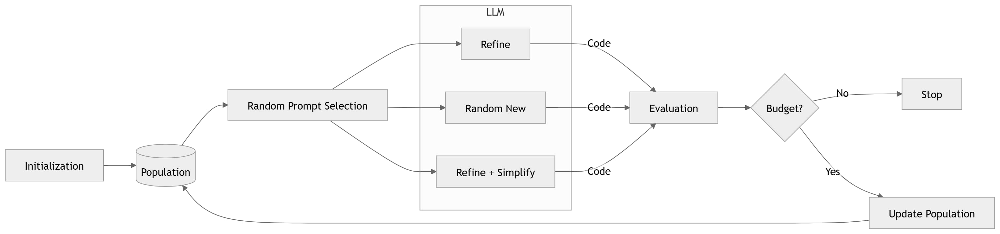
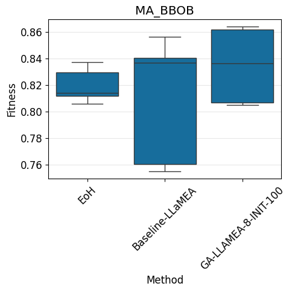
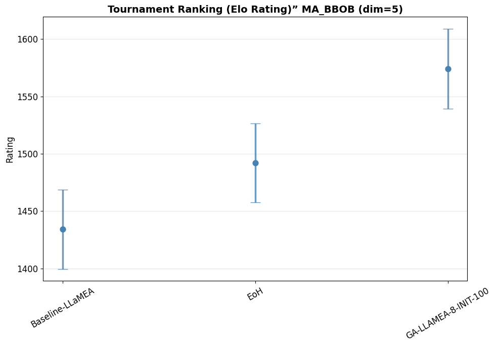
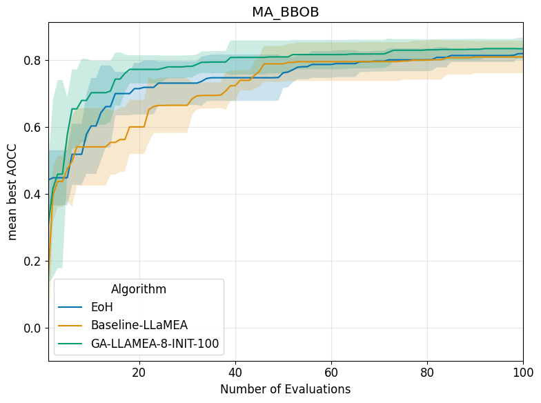
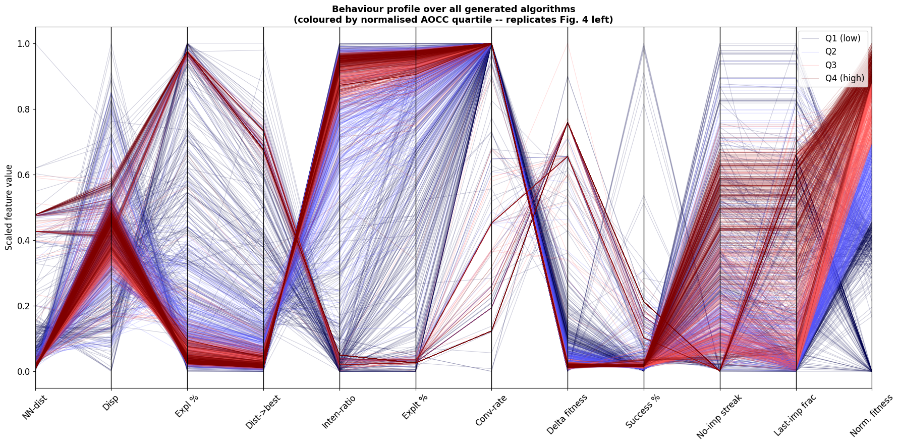
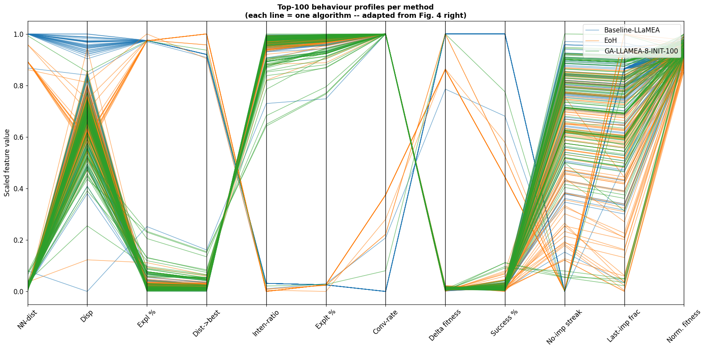
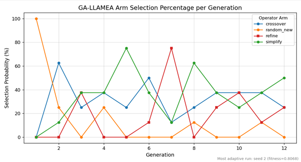
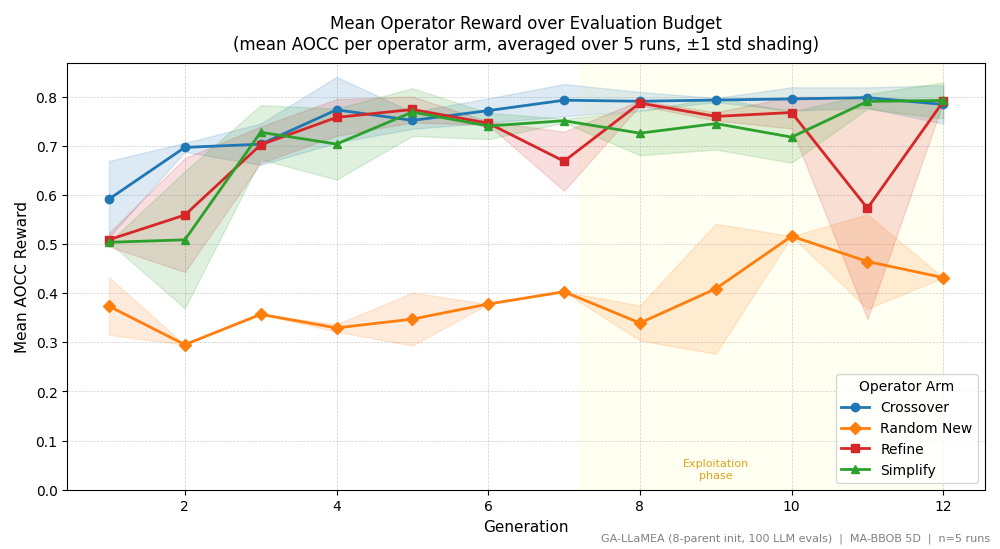

University of Science and Technology of Southern Philippines
GA-LLaMEA: Generative-Adaptive Large Language Model Evolutionary Algorithm
A Framework using Discounted Thompson Sampling for Adaptive Operator Selection in Automated Algorithm Design
Rigel Ray O. Cabaya · Julius G. Baliling · Keycee Rhaye T. Rivas
Adviser: Cheryll S. Pagal, MSAMS
April 2026
Overview
Presentation Outline
1 Introduction & Problem Statement
2 Research Objectives
3 Review of Literature
4 Methodology
5 Results & Discussion
6 Ablation Studies
7 Conclusion & Recommendations
Introduction
Background of the Study
1
The Algorithm Design Challenge
Solving real-world optimization problems requires designing metaheuristic algorithms — a process traditionally done manually by domain experts, requiring extensive trial-and-error and deep mathematical intuition (Wolpert & Macready, 1997)
2
LLMs Enable Automated Algorithm Design
Large Language Models can now generate executable optimization code from natural-language prompts, enabling a new paradigm: LLM-driven Automated Algorithm Design (AAD). Frameworks like LLaMEA and EoH treat the LLM as an evolutionary operator that iteratively refines algorithms (van Stein & Bäck, 2024; Liu et al., 2024)
3
Current Limitations Motivate GA-LLaMEA
However, despite these advances, current LLM-driven frameworks still have fundamental architectural limitations that restrict the quality and diversity of generated algorithms. These limitations are what motivated us to develop GA-LLaMEA.
Core insight: By combining generative crossover (multi-parent recombination via LLM reasoning) with Discounted Thompson Sampling (bandit-based adaptive control), GA-LLaMEA addresses the fundamental limitations of current LLM-driven evolutionary frameworks.
Introduction
Problem Statement
#
Problem
Why It Matters
1
Underutilized Populations
Frameworks like LLaMEA rely on mutation-based refinement — candidates improved in isolation, preventing recombination of complementary strategies, leading to premature convergence
2
Ineffective Recombination
No general-purpose crossover exists for LLaMEA in continuous optimization; syntactic crossover produces invalid or logically inconsistent offspring
3
No Adaptive Selection
Multiple operators without adaptive control creates a scheduling challenge — static probabilities cannot respond to shifting exploration/exploitation needs
Bouras et al., 2025; Hemberg & O'Reilly, 2024; Aydin et al., 2023
Introduction
Research Objectives
1
Develop the GA-LLaMEA Framework
A generative-adaptive evolutionary framework integrating a modified bandit-based operator selection policy derived from Discounted Thompson Sampling (Qi et al., 2023)
2
Implement Generative Crossover Mechanisms
Upgrade the baseline LLaMEA architecture with Generative Crossover that leverages LLM reasoning to synthesize coherent offspring from multiple parent strategies
3
Validate using MA-BBOB Benchmarking
Evaluate performance through Elo ratings, AOCC, behavioural profiling, Code Evolution Graphs, and operator selection dynamics
AOCC: Area Over the Convergence Curve, scored in [0,1] — higher = faster, more consistent convergence across the evaluation budget.
Introduction
Significance of the Study
Modernizing LLaMEA with Generative Crossover
Introduces Inspiration-Based Generative Crossover, advancing explorative capabilities in line with state-of-the-art population frameworks (Meyerson et al., 2023; Elsken et al., 2019)
Bandit-Based Adaptive Control
Pioneers integration of adaptive decision-making into LLM-driven evolutionary optimization via D-TS, eliminating fragile static schedules
Rigorous Empirical Standards
Validates generated algorithms using MA-BBOB and standardized metrics including AOCC (van Stein et al., 2025)
Framework validated on Gemini-2.5-Flash only (no fine-tuning, ICL-only). Multi-model generalization is a future direction.
Section II
Review of Literature
Theoretical foundations and research gaps
Theoretical foundations: EC, NFL, Building Block Hypothesis
LLM-driven AAD landscape and frameworks
Three research gaps addressed by GA-LLaMEA
Literature
Theoretical Foundations
What does current AAD already do?
LLaMEA and EoH generate metaheuristics via iterative LLM prompting with μ+λ selection. However, they remain mutation-centric — candidates evolve in isolation without cross-population information sharing.
van Stein & Bäck, 2024; Liu et al., 2024
Why add an Adaptive Operator Selector?
With 4 operators, static probabilities cannot respond to shifting effectiveness. A bandit controller learns which operator is productive at each stage, eliminating fragile manual scheduling.
Aydin et al., 2024; Fialho et al., 2008; Yin et al., 2024
Why D-TS over UCB or sliding-window?
UCB uses time-scheduled decay — exploration decreases with elapsed evaluations. D-TS uses exponential discounting (γ=0.99), responding to actual reward history rather than a clock.
Qi et al., 2023; Zheng et al., 2025; Cavenaghi et al., 2021
Why introduce crossover?
Mutation alone restricts search to local basins (Opris et al., 2025). Crossover exists in LLaMEA-BO and ReEvo, but no prior work introduces general-purpose crossover within LLaMEA for continuous black-box heuristics.
Opris, 2025; Li et al., 2025; Assumpção et al., 2026
Literature
LLM-Driven Automated Algorithm Design
Framework
Year
Key Contribution
GP (Koza)
1992
Foundational tree-based program evolution; established automated algorithm generation
Hyper-heuristics
~2000s
Heuristics to select/generate heuristics; introduced selection vs. generation paradigm
FunSearch
Nature 2024
LLM + systematic evaluator for combinatorial problems; best-so-far prompting
EoH
Liu et al., ICML 2024
Dual-population: evolves Python code AND natural-language thought jointly
LLM evolutionary algorithm for metaheuristic synthesis; feedback-driven refinement
MetaBBO Taxonomy
Zhang et al., 2025
Formalizes Algorithm Selection vs. Generation; positions LLM-AAD at frontier
CodeEvolve
Assumpção et al., 2026
Multi-model code evolution; inspiration-based crossover with ≥2 parent solutions
GA-LLaMEA
This Study
First general-purpose generative crossover + D-TS adaptive operator selection in LLaMEA
LLaMEA Research Lineage
LLaMEAMutation-centric; (1+1)-ES
→
Photonic-LLaMEADomain extension to photonics
→
LLaMEA-BOPopulation + crossover for BO
→
LLaMEA-SAGEStructural feedback; CEG-informed
→
GA-LLaMEAGenerative crossover + D-TS
Literature
Research Gap — The Three Deficits
Gap
Current State
Our Solution
Gap 1 Mutation-centric
Single-parent refinement only; no mechanism to recombine complementary strategies (Opris, 2025; Li et al., 2025; Yin et al., 2024; Assumpção et al., 2026)
Inspiration-Based Generative Crossover
Gap 2 Invalid recombination
Syntactic crossover produces structurally erroneous offspring without semantic constraints (Hemberg & O'Reilly, 2024; Meyerson et al., 2024; Bouras et al., 2025)
Strategy-level semantic synthesis via LLM reasoning
Gap 3 Static scheduling
Fixed operator probabilities cannot adapt to non-stationary dynamics (Aydin et al., 2024; Zheng et al., 2025; Qi et al., 2023; Cavenaghi et al., 2021)
D-TS adaptive control with discounted posteriors
Section III
Methodology
Framework architecture and experimental design
GA-LLaMEA pipeline architecture
Four genetic operators + D-TS controller
Experimental setup: MA-BBOB, metrics, baselines
Methodology
Framework Architecture
Baseline LLaMEA (van Stein & Bäck, 2024)

Key limitation: Parallel but isolated refinement paths — no recombination across candidates. Static random operator selection.
v = validity flag (1 if algorithm runs + evaluates, 0 if crash). Absolute fitness clipped to [0,1] — prevents reward inflation near the fitness ceiling.
Higher values in [0, 1] indicate faster and more consistent convergence.
■ Competitive Elo Ratings
Provides a standardized relative ranking based on tournament-style one-against-one matches across all 120 benchmark instances (24 functions × 5 seeds).
Measures the quality of best algorithms produced, complementing AOCC which measures all algorithms.
■ Behaviour-Space Analysis
Profiles every generated algorithm across 11 metrics:
Structural analysis tracing genealogical lineage, algorithmic stability, and code complexity progression across generations.
Reveals whether evolution builds constructively or drifts — a unique diagnostic for LLM-driven code synthesis.
Section IV
Results & Discussion
Performance, convergence, behaviour, and operator dynamics
Headline metrics: Elo, fitness, AOCC, Q4 rate
Convergence, behavioural profiles, CEGs
D-TS operator selection dynamics
Results
Consolidated Performance
Method
Elo
Mean Fitness
σ
Mean AOCC
Q4 Algorithms
GA-LLaMEA
~1575
0.8348
0.0255
0.6028
36.3%
EoH
~1490
0.8197
0.0119
0.5081
17.6%
Baseline LLaMEA
~1435
0.8098
0.0432
0.5315
21.0%

Key takeaway: GA-LLaMEA leads across all metrics. Explained by three behavioural mechanisms examined next.
Baselines: LLaMEA (van Stein & Bäck, 2024), EoH (Liu et al., 2024). MA-BBOB (Vermetten et al., 2023).Results
Elo Tournament Rankings

~1575GA-LLaMEA Elo
+85vs EoH (≈62% win)
+140vs Baseline LLaMEA
What is Elo? Pairwise tournament; +85 Elo ≈ 62% win rate (Albers & de Vries, 2001). Elo = quality of best algorithms; AOCC = aggregate over all.
Results
Convergence Analysis

GA-LLaMEA
Steepest climb, highest plateau.
EoH
Fast early, flattens after eval ~40.
Baseline
Slowest. Mutation-only limitation.
Results
Behavioural Profile Analysis
Every algorithm generated during evolution is profiled. 1,442 total: 472 (Baseline), 482 (EoH), 488 (GA-LLaMEA).
Metric
GA-LLaMEA
Baseline
EoH
Q4 Gold Std
Expl %
6.66%
9.70%
10.95%
4.03%
Inten-ratio
0.8927
0.8362
0.7761
0.9395
Dist→best
0.4241
0.6312
0.7277
0.2441
Last-imp frac
0.3501
0.2677
0.1436
0.5252


Profiling: van Stein et al. (2025). Exploration/exploitation: Berger-Tal et al. (2014).Results
Why GA-LLaMEA Outperforms
1
Generative Crossover Enables Trait Combination
High Intensification Ratio (0.8927), low Distance-to-Best (0.4241). Per-method correlation: Inten-Ratio → fitness r = 0.667 (Building Block Hypothesis: Goldberg, 1989; Holland, 1992)
2
D-TS Steers Toward Gold Standard
Progressively shifts selection toward Simplify and Crossover — steering meta-level search toward the gold standard behavioural region (Qi et al., 2023; non-stationary bandits: Branke, 2001)
3
Sustained Late-Stage Improvement
Last Improvement Fraction: 0.3501 vs 0.2677 (Baseline) vs 0.1436 (EoH) — progress continues near the optimum (stagnation avoidance: Rajabi & Witt, 2023)
EoH weakness: Most exploratory profile (Expl% 10.95%, Inten-ratio 0.7761). Its e1/e2 operators prioritise diversity over refinement → persistent exploration bias.
CEGs: van Stein et al. (2025). Building blocks: McPhee et al. (2008); Angeline (1997).Results
Operator Selection Dynamics

Fig. 4.8 — Selection probabilities per generation

Fig. 4.9 — Mean reward per operator arm
D-TS transitions from exploration → exploitation. Crossover achieves the highest mean reward, validating generative recombination. The shift from diversification to refinement demonstrates successful adaptation to non-stationary reward distributions (Adaptive operator selection: Fialho et al., 2008; Tian et al., 2022).
Exploration→exploitation shift (Fig 4.8); variance reduced 0.0255 vs 0.0432 baseline; primarily a variance-reduction mechanism (Qi et al., 2023)
3
GA-LLaMEA Framework Validated First crossover + adaptive control in LLM-driven AAD
Fitness 0.8348, Elo ~1575, 36.3% Q4, closest to gold standard — consistent across 5 runs on 120 unseen test instances (van Stein et al., 2025; Vermetten et al., 2023)
Conclusion
Key Results at a Glance
0.8348Mean Fitness± 0.0255 (tightest)
~1575Elo Rating+85 vs EoH
0.6028Mean AOCCvs 0.5081 EoH
36.3%Q4 Algorithmsvs 17.6% EoH
0.8927Intensification Ratiovs 0.7761 EoH
HighestCrossover RewardD-TS validates crossover
Future Work
Recommendations
#
Direction
Rationale
1
Higher Dimensions
10D, 20D, 50D+ MA-BBOB scalability assessment
2
Multi-Model Ensembles
Multiple LLMs (GPT-4, Claude, Gemini) as generative engines
Albers, W. & de Vries, C. (2001)."; Elo chess ratings and the lognormal distribution."
Angeline, P. J. (1997). "Subtree crossover: Building block engine or macromutation?" Genetic Programming Theory and Practice.
Assumpção, G. et al. (2026). "CodeEvolve: Multi-model code evolution with inspiration-based crossover." Preprint.
Aydin, Z. et al. (2024). "Adaptive operator selection in evolutionary multi-objective optimization." Swarm and Evolutionary Computation.
Berger-Tal, O. et al. (2014). "The exploration-exploitation dilemma: A multidisciplinary framework." PLoS ONE, 9(4).
Branke, J. (2001). "Evolutionary optimization in dynamic environments." Kluwer Academic Publishers.
Cavenaghi, E. et al. (2021). "Non-stationary multi-armed bandit: Empirical evaluation of a new concept drift-aware algorithm." Entropy, 23(3).
Fialho, A. et al. (2008). "Adaptive operator selection with dynamic multi-armed bandits." GECCO '08.
Goldberg, D. E. (1989). Genetic Algorithms in Search, Optimization, and Machine Learning. Addison-Wesley.
Hansen, N. et al. (2021). "COCO: A platform for comparing continuous optimizers in a black-box setting." Optimization Methods and Software, 36(1).
Holland, J. H. (1992). Adaptation in Natural and Artificial Systems. MIT Press (2nd ed.).
Li, X. et al. (2025). "LLaMEA-BO: Bayesian optimization with LLM-generated operators and population-based crossover."
Liu, F. et al. (2024). "Evolution of Heuristics: Towards efficient automatic algorithm design using LLMs." ICML 2024.
McPhee, N. F. et al. (2008). "Semantic building blocks in genetic programming." EuroGP 2008.
Meyerson, E. et al. (2024). "Language Model Crossover: Variation through few-shot prompting." ACM TELO, 4(2).
Opris, A. (2025). "LLM-based mutation operators for evolutionary algorithm design." GECCO '25.
Qi, H. et al. (2023). "Discounted Thompson Sampling for non-stationary bandits." NeurIPS 2023.
Rajabi, A. & Witt, C. (2023). "Stagnation detection in evolutionary computation." Algorithmica, 85.
Sudholt, D. (2014). "Crossover speeds up building-block assembly." GECCO '14.
Tian, Y. et al. (2022). "Automated selection of evolutionary operators with deep reinforcement learning." IEEE TEVC, 26(5).
van Stein, B. & Bäck, T. (2024). "LLaMEA: A Large Language Model Evolutionary Algorithm for automatically generating metaheuristics." arXiv:2405.20132.
van Stein, B. et al. (2025). "BLADE: Benchmarking LLM-generated Algorithm Design and Evolution." arXiv.
van Stein, B. et al. (2025). "Behavioural profiling and Code Evolution Graphs for LLM-generated algorithms."
Vermetten, D. et al. (2023). "MA-BBOB: Many-affine BBOB benchmark for testing large-scale optimization." GECCO '23.
Zheng, B. et al. (2025). "Adaptive operator selection with contextual Thompson Sampling." AAAI 2025.
Thank You
GA-LLaMEA: A Generative-Adaptive Evolutionary Framework using Discounted Thompson Sampling
Rigel Ray O. Cabaya · Julius G. Baliling · Keycee Rhaye T. Rivas
Adviser: Cheryll S. Pagal, MSAMS
Key open questions: D-TS isolation condition, prompt sensitivity, and scaling to higher dimensions.